「治疗品牌」
-

美敦力胰岛素泵·售后服务
“1型的还有胰岛素笔注射、2型的除了注射笔和泵疗法外还有药物治疗。国内外都有很多品牌。但是国外的大多品牌因为耗材太贵，国内很少人用。”
-

省级医院·糖尿病科医生
“早期使用胰岛素可以使血糖早期得到控制，从而延缓或减少并发症发生，比如多次注射或者胰岛素泵输注治疗。”
-

糖尿病患者·带病10年
“及时就医，知道自己糖尿病的类型。了解各种有效治疗途径。不过更推荐通过胰岛素泵进行治疗。”
I
·糖尿病四大类型·
-

一型糖尿病
一型的糖尿病患者占总数的5%～10%。发病年龄多在30岁以下，成年人、老年人发病较少。1型糖尿病患者需依赖注射胰岛素存活，否则会出现酮症酸中毒，如不及时治疗则有可能会出现生命危险。1型糖尿病患者发病时糖尿病症状较明显，容易发生酮症，突然出现酮症酸中毒，重者昏迷，或在几天或10多天内体重减轻5～10千克，对胰岛素敏感，体瘦，但有少数病人发病慢，也有些患者发病时为非胰岛素依赖型的，以后逐渐转变为胰岛素依赖型糖尿病
-

二型糖尿病
二型的糖尿病患者占总数的80%～90%。多数发病在35岁以后，起病缓慢、隐匿，有些病人是在健康体检时发现的。体重超重或月巴胖者居多。这一类型的糖尿病多发生于成年，特别是老年发病，但也可能在儿童期发病，平时一般可以不用胰岛素治疗
-

特殊类型和妊娠糖尿病
其他特殊类型糖尿病则一般都有特殊的病因可查，如胰腺疾病造成的胰岛素合成障碍，或同时服用了能升高血糖的药物，或其他内分泌的原因剖起对抗胰岛素的激素分泌太多、长期营养不良、蛋白质摄入量较低等；妊娠糖尿病是妇女在妊娠期间诊断出来的一类特有的糖尿病，是指妇女妊娠期间患上的糖尿病。临床数据显示，有2%--3%的女性在怀孕期间可发生糖尿病，有近35%的妊娠妇女会出现妊娠期糖尿病征象，这些妇女可能会发展成为2型糖尿病
-
继发性糖尿病
继发性糖尿病是指已有明确病因的一类糖尿病，如胰腺切除、急慢性胰腺炎、皮质醇增多症、肢端肥大症等。另外，长期服用某些药物也可引发糖尿病，如强的松（泼尼松）、双氢克尿塞（氢氯噻嗪）等。继发性糖尿病远较原发性少见，我们一般所指的糖尿病，除非特殊说明，一般都是指原发性糖尿病
II
·糖尿病治疗方式·
-
胰岛素
如果你有1型糖尿病，你必须服用胰岛素，因为你的身体不再使用这种激素。您需要在白天多次服用胰岛素，包括餐食。您也可以使用胰岛素泵，它可以在一整天内为您提供小而稳定的剂量。 可以使用胰岛素泵、笔、注射、吸入器等
-

药物
许多2型糖尿病患者可以使用糖尿病药物。这些药物可能包括糖尿病药丸或您在皮下注射的药物，如胰岛素。在一定时期，您可能需要同时服用不止一种的药物。及时您不平时使用胰岛素，住院或者怀孕等特殊期间您还是需要使用
-

胃转流手术
也称减肥手术或代谢手术，减肥手术可能有助于一些肥胖和2型糖尿病患者失去大量体重并恢复正常血糖水平。一些糖尿病患者在减肥手术后可能不再需要糖尿病药物。患者的血糖水平是否会提高以及血糖水平提高多久、患者的体重减轻手术类型和体重减轻的程度也会有所不同。其他因素包括某人患有糖尿病的时间以及该人是否使用胰岛素
-

人工胰腺
人造胰腺，一套可调节人体高血糖和低血糖的全新“人造胰腺”系统在美国测试成功，安装这套系统的11名糖尿病患者在24小时内血糖值始终保持了正常状态。与先前人造胰腺相比，全新人造胰腺不仅可控制高血糖，而且可调整低血糖患者的血糖值
-
胰岛细胞移植
胰岛移植是对控制不佳的1型糖尿病的实验性治疗。 胰岛是胰腺中产生激素胰岛素的细胞群。 在1型糖尿病中，人体的免疫系统攻击这些细胞。 胰岛移植替代破坏胰岛的新胰岛素制造和释放胰岛素。 该程序将器官捐献者的胰腺胰岛转移至1型糖尿病患者。 由于研究人员仍在研究胰岛移植，该程序仅适用于参与研究的人员
-
饮食控制
糖尿病饮食治疗不是饥饿疗法。其患者的饮食原则，首先是膳食均衡，保持标准体重，同时摄入和各自的标准体重及活动强度相一致的食量。 建议此时应多吃低热量、高纤维的食品，如各种蔬菜，少量多餐，将正餐的主食匀出1/4的量作为加餐。多选用粗杂粮代替精细粮，如用荞麦、玉米、小米、高粱等代替部分米饭或面食，可有更强的饱腹感，且能提供较多的微量元素，如荞麦中含有多量的铬，能改善患者的葡萄糖耐量；将口味变清淡，也会降低食欲
III
· 相关品牌 ·
-
胰岛素品牌
诺和诺德胰岛素
礼来胰岛素
美敦力胰岛素 -
降糖药品牌
西格列汀
格华止
拜糖平

小结
糖尿病人就像近视的人一样。近视的人眼睛看不清东西就佩戴眼镜，而糖尿病人只需要多佩戴一个胰岛素泵。虽然糖尿病目前不能被完全治愈， 但是可以通过自身对饮食的控制以及药物进行辅助治疗。关于糖尿病的研究在国际上仍然收到很多关注。尤其是当今社会，糖尿病人的比例增大，我们需要更 多的了解、正视疾病。
返回顶部